This Midnight Cooking leveling guide shows you how to level Cooking from 1 to 100 with the fastest and cheapest path I found. You get the Cooking trainer location, exact leveling steps, and the best food buffs.
This Midnight Cooking leveling guide shows you how to level Cooking from 1 to 100 with the fastest and cheapest path I found. You get the Cooking trainer location, exact leveling steps, and the best food buffs.
If you just want to hit 100 fast, you can do most of it with vendor materials near the trainer in Silvermoon City. I also listed the best Feast, Master, and cheaper food buffs so you can pick what to craft based on your gold.
Cooking Trainer
The Midnight Cooking trainer is Sylann in Silvermoon City, inside the inn. Talk to her to learn Cooking and pick up new recipes as you level up.
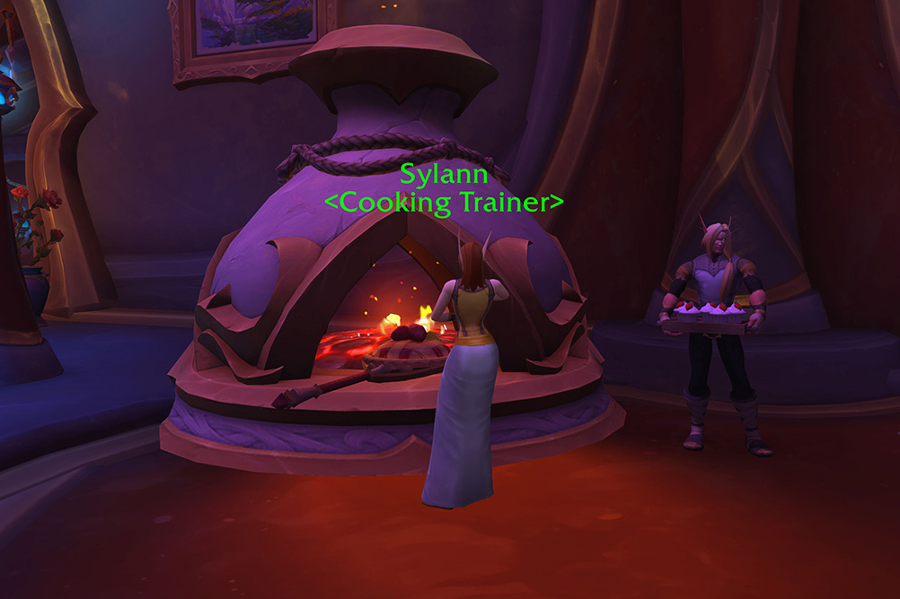
Leveling Midnight Cooking
1 - 35
50x 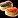 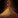 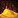
Both of these materials are sold by the Cooking supply vendor near your trainer, do not buy these from the Auction House. Make this recipe until it turns grey.
If you are leveling Cooking just to unlock Deftness, Finesse, or Perception recipes for gathering professions, you can stop at 25.
35 - 100
At 35, you will unlock 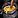
The recipe will be green for the last 25 points, so you will have to make a lot, but it is still very cheap and fast to level.
- 200x Spiced Biscuits - 800x A Big Ol' Stick of Butter, 2400x Pouch of Spices
- Use Hearty Food on the Spiced Biscuits.
- If you did not reach 100, just make more food.
Best Food Buffs
These are the best food buffs from Midnight Cooking. Master recipes give higher stat values, and Feasts buff your entire group. Vendor materials are not listed. You can buy all of those from the Cooking supply vendor near your trainer.
Cooking Recipes
Flora Frenzy is a reward from the  Gomphusta quest in Harandar.
Gomphusta quest in Harandar.
All other recipes are learned from the Cooking trainer in Silvermoon City.
Feasts
Feasts buff your entire group. They give +98 Stamina and either +50 Primary Stat or +65 Highest Secondary Stat.
| Feast | Buff | Reagents |
|---|---|---|
| +65 Highest Secondary Stat, +98 Stamina |
|
|
| Harandar Celebration | +50 Primary Stat, +98 Stamina |
|
| Quel'dorei Medley | +65 Highest Secondary Stat, +98 Stamina | |
| Silvermoon Parade | +50 Primary Stat, +98 Stamina |
Food Buffs
| Food | Buff | Reagents |
|---|---|---|
| +65 Highest Secondary Stat |
|
|
| Flora Frenzy | +65 Highest Secondary Stat |
|
| Impossibly Royal Roast | +65 Primary Stat | |
| Royal Roast | +65 Primary Stat |
Cheaper Food
Advanced recipes give slightly lower stats but are cheaper to make. They are supposed to be cheaper, but honestly some of them require so many fish that better food might be cheaper, or the same price.
| Food | Buff | Reagents |
|---|---|---|
| Arcano Cutlets | +59 Critical Strike |
|
| +59 Critical Strike | ||
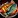 Tasty Smoked Tetra |
+59 Critical Strike | |
| +59 Haste |
|
|
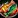 Fel-Kissed Filet |
+59 Haste |
|
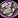 Null and Void Plate |
+59 Haste |
|
| Glitter Skewers | +59 Mastery |
|
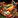 Warped Wise Wings |
+59 Mastery |
|
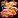 Braised Blood Hunter |
+59 Versatility | |
| Buttered Root Crab | +59 Versatility |
|
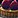 Void-Kissed Fish Rolls |
+59 Versatility |
Profession Equipment
Cooking uses two profession equipment slots, but both are crafted by other professions. Inscribers make the rolling pin (tool) and Tailors make the chef hat (accessory). The green versions can be bought on the Auction House. Blue and epic versions are soulbound, so you will need to place a Crafting Order.
Unlike other professions, Cooking tools have fixed stats. You cannot add a Missive to customize the secondary stat, so what you see is what you get.
| Tool/Accessory | Crafted By | Materials Needed |
|---|---|---|
| Inscription | 10x Azeroot, 1x |
|
| Tailoring | 2x |
|
| Inscription | 4x |
|
| Tailoring | 5x |
|
| Inscription | 4x |
|
| Tailoring | 5x |